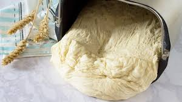

bread dough

Description
Dough is the basic and primary ingridient in the large majority of wheat based products and the likes, such as bread, pastries, and other baked goods.
is it essential to a lot of dishes
and food products that we all know today, and with experience, is also not diffecult to recreate when you want
to prepare a big surpise to the family, or just snack on a cookie.
ingridients:
- 3 cups of plain bread flour
- 1 tea spoon of dried yeast
- 2 tea spoons of sugar
- 1/2 tea spoon of salt
- 1 cup of warm milk
- 2 tea spoon of of melted butter
cooking steps:
- Combine flour, yeast and sugar in a large bowl. Stir in salt. Make a well in the centre. Add milk and butter
- Use a wooden spoon to stir the mixture until well combined, then use your hands to bring the dough together in the bowl.
Turn onto a lightly floured surface and knead for 10 minutes or until the dough is smooth and elastic
- Brush a large bowl with olive oil to grease. Place the dough in the bowl and cover with a damp tea towel. Set aside in a warm,
draught-free place to prove for 45 minutes-1 hour or until the dough has almost doubled in size.
- Punch down the centre of the dough with your fist. Turn onto a lightly floured surface.
Knead for 2 minutes or until the dough is elastic and has returned to its original size
back to home page